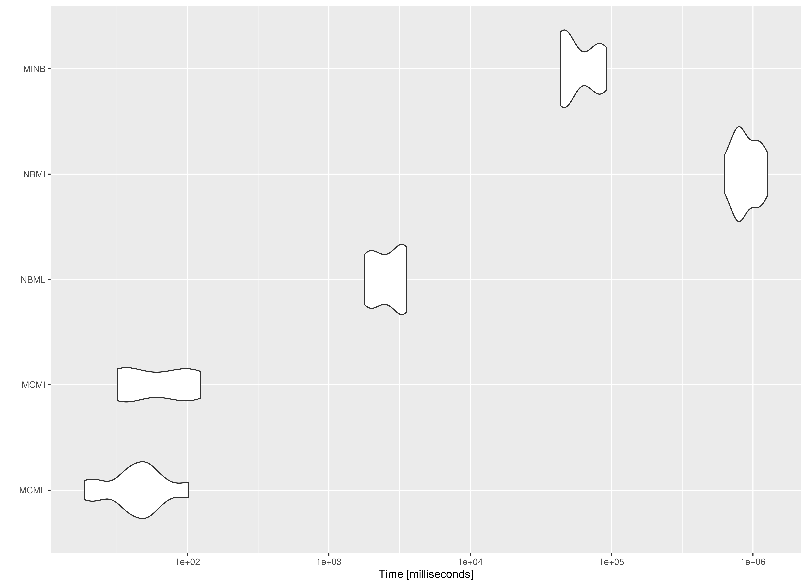
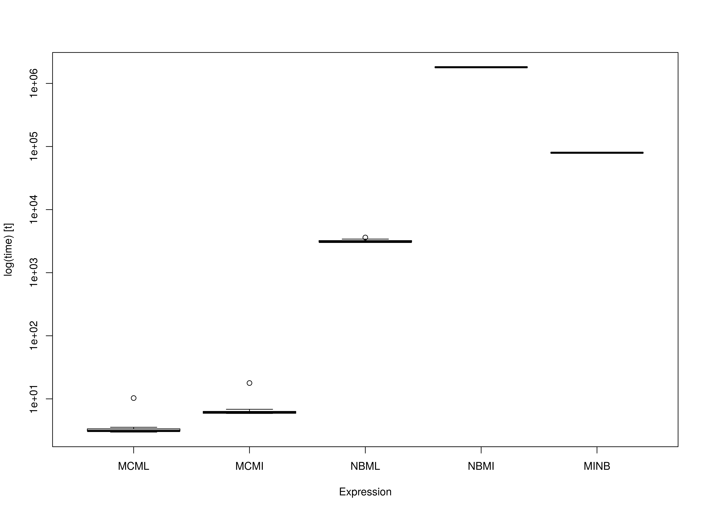

The following is a simple benchmark comparing the computational requirements of the methods to generate confidence intervals for the indirect effect with missing observations. We will use the generated data in the Data Generation article.
In this benchmark, we compare the following methods
- Monte Carlo method using full-information maximum likelihood
(
MCML()), - Monte Carlo method using multiple imputation
(
MCMI()), - full-information maximum likelihood nested within nonparametric
bootstrap (
NBML()), - multiple imputation nested within nonparametric bootstrap
(
NBMI()) - nonparametric bootstrap nested within multiple imputation
(
MINB())
Arguments
| Variables | Values | Notes |
|---|---|---|
| m | 100 | Number of imputations. |
| R | 5000 | Number of Monte Carlo replications. |
| B | 5000 | Number of bootstrap samples. |
| mplus_bin | “/opt/mplusdemo/mpdemo” | Path to Mplus binary. |
NOTE: If you are using
manmcmedmiss-rockerormanmcmedmiss.sifdescribed in the Containers article, setmplus_bin = "mpdemo".
Parameters
| Variable | Value | Notes |
|---|---|---|
| n | 50 | \(n\) |
| tauprime | 0.14142135623731 | \(\tau^{\prime}\) |
| alpha | 0.714074191775111 | \(\alpha\) |
| beta | 0.714074191775111 | \(\beta\) |
Data
Amputation
Generate sample data with missing values using the multivariate amputation approach proposed by Schouten et al. (2018).
data_missing <- AmputeData(
data_complete,
mech = "MAR",
prop = 0.10
)Imputation
Perform multiple imputation following Asparouhov and Muthen (2010)
using Mplus.
data_mi <- ImputeData(
data_missing,
m = m,
mplus_bin = mplus_bin
)Maximum Likelihood
Missing Data
Parameters of the simple mediation model are estimated using full-information maximum likelihood to handle missing data.
fit_ml <- FitModelML(
data_missing,
mplus_bin = mplus_bin
)Multiple Imputation
Parameters of the simple mediation model are estimated using maximum likelihood for each of the imputed data sets. The parameter estimates and their sampling covariance matrix are pooled.
fit_mi <- FitModelMI(
data_mi,
mplus_bin = mplus_bin
)Summary of Benchmark Results
summary(benchmark, unit = "ms")
#> expr min lq mean median uq
#> 1 MCML 2.947326e+00 2.993842e+00 3.179497e+00 3.049235e+00 3.283371e+00
#> 2 MCMI 5.827789e+00 5.837357e+00 7.146268e+00 6.045726e+00 6.688986e+00
#> 3 NBML 3.016788e+03 3.033415e+03 3.088508e+03 3.039690e+03 3.055273e+03
#> 4 NBMI 1.677795e+06 1.705902e+06 1.705861e+06 1.710623e+06 1.713598e+06
#> 5 MINB 7.583123e+04 7.618493e+04 7.635082e+04 7.637203e+04 7.655441e+04
#> max neval cld
#> 1 3.863897e+00 10 a
#> 2 1.231382e+01 10 a
#> 3 3.487594e+03 10 a
#> 4 1.715493e+06 10 c
#> 5 7.666758e+04 10 bSummary of Benchmark Results Relative to the Fastest Method
summary(benchmark, unit = "relative")
#> expr min lq mean median uq
#> 1 MCML 1.000000e+00 1.000000e+00 1.00000 1.000000e+00 1.000000e+00
#> 2 MCMI 1.977314e+00 1.949788e+00 2.24761 1.982702e+00 2.037231e+00
#> 3 NBML 1.023568e+03 1.013218e+03 971.38263 9.968697e+02 9.305293e+02
#> 4 NBMI 5.692601e+05 5.698035e+05 536518.95309 5.610007e+05 5.219020e+05
#> 5 MINB 2.572882e+04 2.544721e+04 24013.48644 2.504629e+04 2.331580e+04
#> max neval cld
#> 1 1.000000e+00 10 a
#> 2 3.186891e+00 10 a
#> 3 9.026105e+02 10 a
#> 4 4.439800e+05 10 c
#> 5 1.984204e+04 10 bPlot

The MC approaches are faster compared to their
NB counterparts. Note the increasing model complexity will
increase the computational cost of NB. However, for
MC, model complexity will not increase the computational
cost of the simulation stage. For example, MI estimates are
more computationally intensive than ML estimates. This
results in a large difference between NBML and the two
NB methods using MI, that is,
NBMI and MINB. Note that MINB is
faster than NBMI as expected but it is still significantly
slower than the MC approaches.
However, if we perform the model fitting step outside the benchmark
calculation, the speed of MCML and MCMI will
be virtually identical. In this implementation, however,
MCMI will be a little bit slower than MCML
because it generates two sets of confidence intervals (vcov
and vcov_tilde) while MCML generates a single
set. Since MC relies on a single estimate of the parameters
and the sampling covariance matrix, it is suited for more complex
models.
NOTE: Note that since
NBonly needs point estimates, a closed form solution of the indirect effect is used inNBMIandMINB. When optimization is used to estimate parameters in the context of structural equation modeling,NBMIandMINBwill be significantly slower.
References
Asparouhov, T., & Muthen, B. (2010). Multiple imputation with Mplus. Retrieved from http://www.statmodel.com/download/Imputations7.pdf
Schouten, R. M., Lugtig, P. and Vink, G. (2018). Generating missing values for simulation purposes: A multivariate amputation procedure. Journal of Statistical Computation and Simulation, 88(15), 1909–1930. https://doi.org/10.1080/00949655.2018.1491577